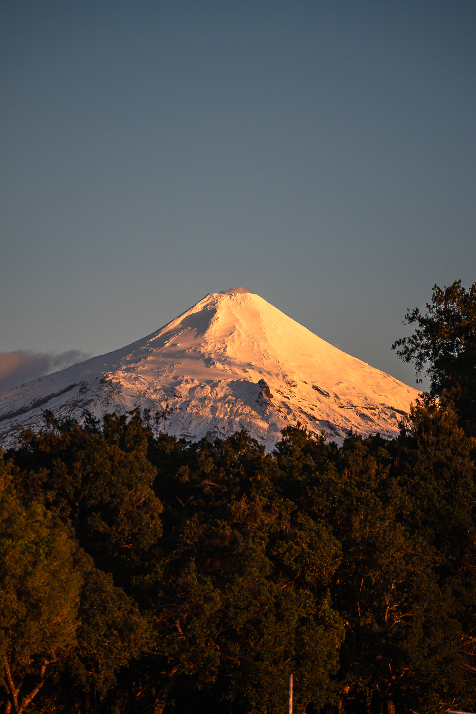
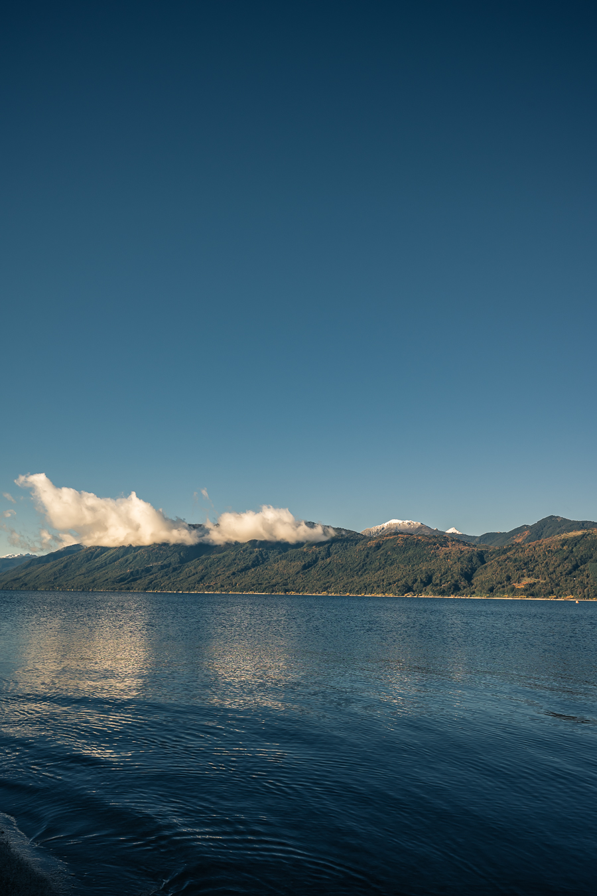
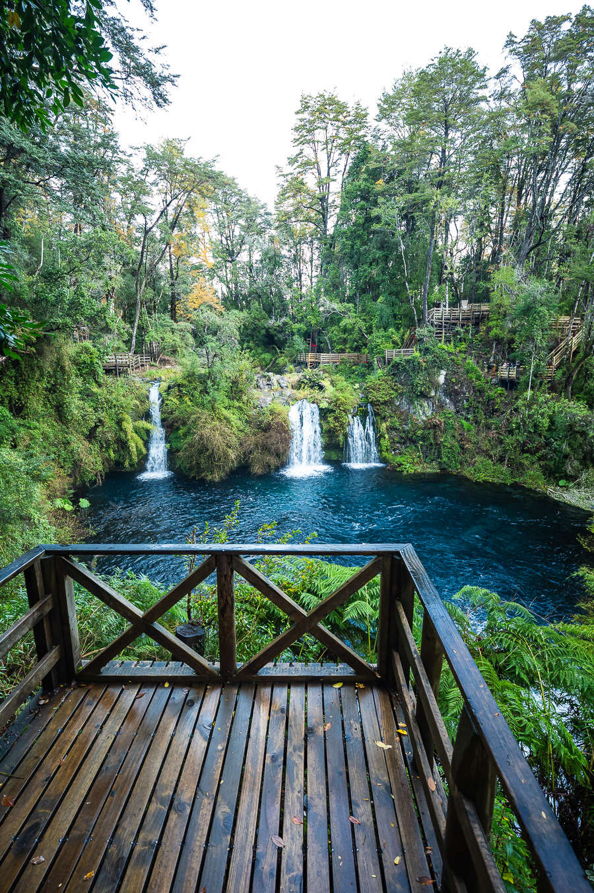
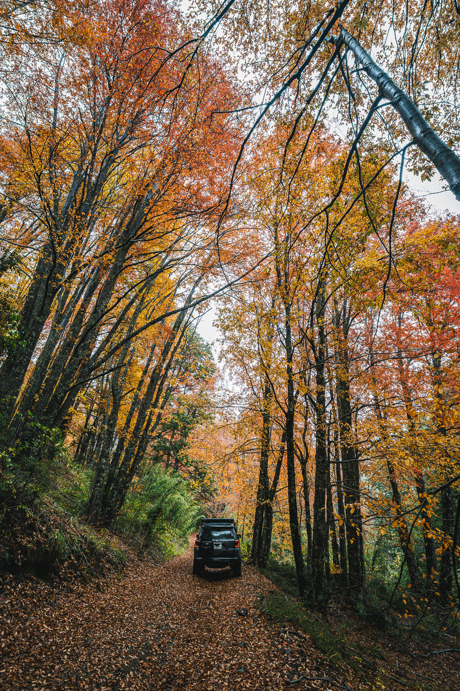
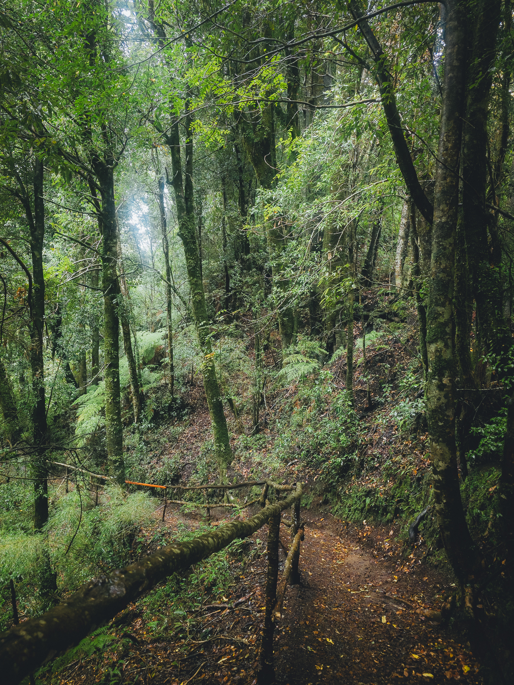
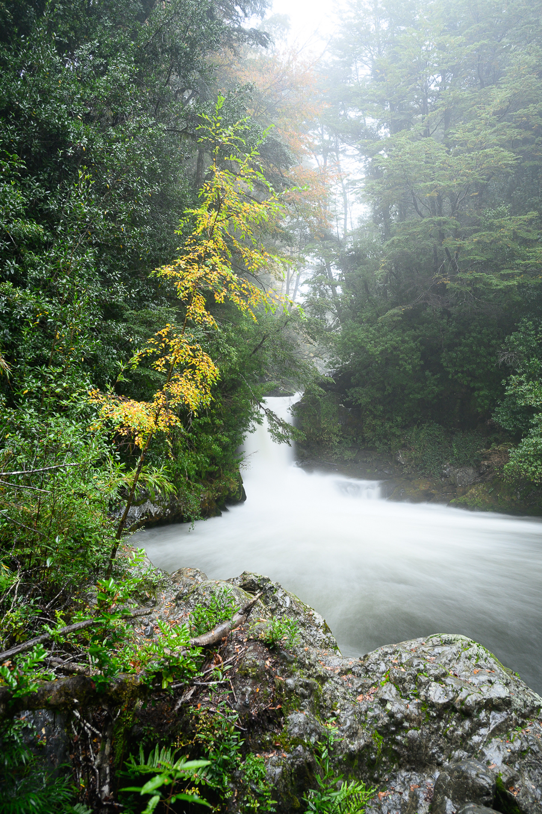
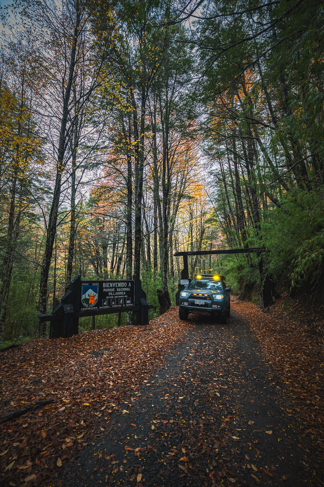
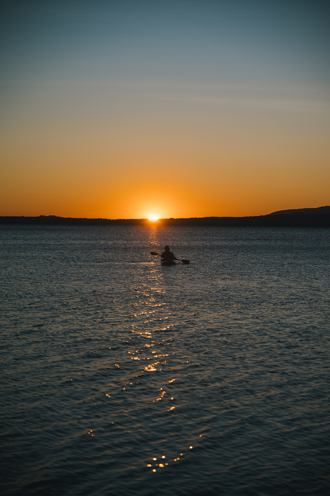
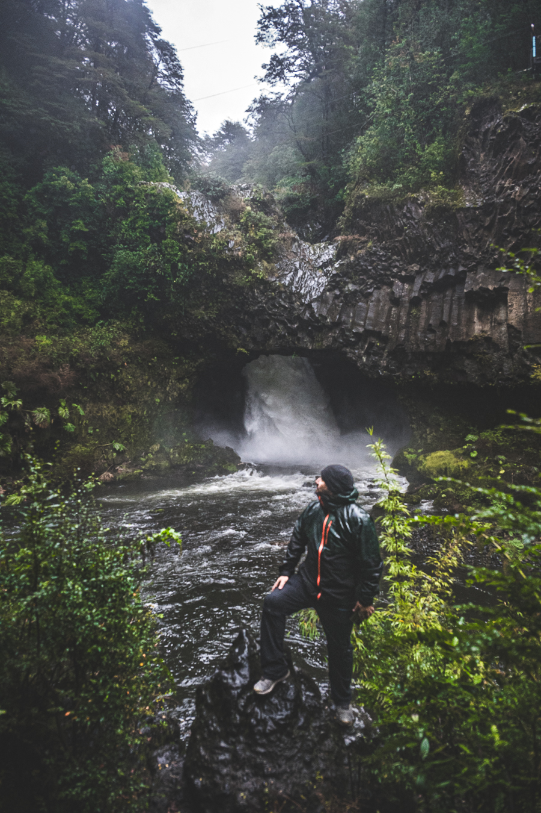

Mayo 2026
Tolhuaca
Volcanes, miradores, reflejos y bosque de transicion bajo cielo despejado.
Ver en Google Maps


Fotografia de naturaleza
Portafolio fotografico de naturaleza, senderos, lagos y cascadas del sur de Chile, construido con una mirada minimalista y contemporanea.
Ver portafolioTrabajo con luz natural, composiciones limpias y escenas donde la naturaleza conserva su escala. Cada serie reune una salida distinta, con su clima, su vegetacion y su propia forma de quedarse en la memoria.
Portafolio
Volcanes, miradores, reflejos y bosque de transicion bajo cielo despejado.
Ver en Google Maps
Lagos, bosque nativo, agua en movimiento y luz filtrada entre senderos.
Ver en Google Maps


Lago, volcan, bosque humedo y caminos interiores de la zona lacustre.
Ver en Google Maps



Senderos cerrados, araucarias, cascadas y detalles pequenos del bosque.
Ver en Google Maps


Mayo 2026


Mayo 2026


Mayo 2026




Mayo 2026



About
Soy Mario, fotografo de naturaleza. Me interesa documentar rutas, parques, bosques y escenas donde el paisaje aparece sin artificio, con una estetica sobria: menos ruido visual, mas presencia del territorio.
Este portafolio reune exploraciones fotograficas por el sur de Chile y puede crecer con nuevas series, impresiones, relatos de viaje o encargos editoriales.
Contact
Para encargos, impresiones o colaboraciones, escribeme por Instagram con el tipo de serie, ubicacion y fechas aproximadas.